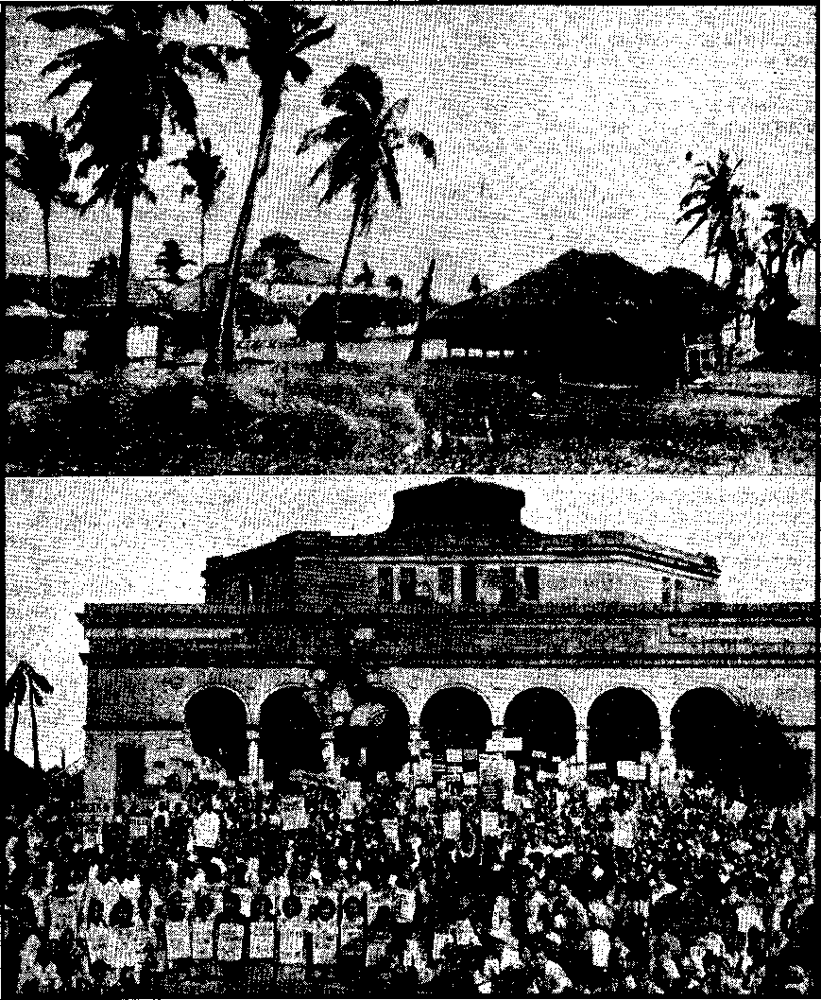
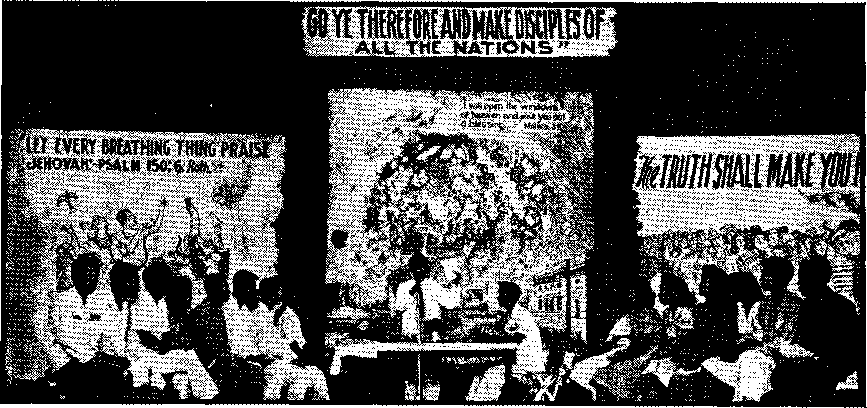

Contents
At Soma of the Execution Camps
pie Hierarchy’s Informal Government
Another Watchtower College Class
“Thy Word Is Truth”
Easter Egg and Rabbit Not Christian
Theocratic Assembly in the Philippines
Hierarchy vs. United States Army
Late Efficiency and Safety Gadgets
Published every other Wednesday by WATCHTOWER BIBLE AND TRACT SOCIETY, INC. Ill Adama St., Brooklyn 1, N. Y.» U. S. A, OFFICERS
President N, H. Knorr
Secretary W. E. Van Amburgh
Editor Clayton J. Woodworth
Five Cents a Copy
a year in the United States
11.36 to Canada and all other countries
NOTICE TO SUBSCRIBERS
Remittan etc For your own safety, remit by portal note or by postal or express money order or by bank draft. When coin or currency is lost in the ordinary mails, there Is no redress. Remittances from countries other than those named below may be made to the Brooklyn office, but only by International postal moneyorder.
Receipt of a new or renewal subscription wfll be acknowledged only when requested. Notice of Expiration is sent with the journal one month before subscription expires. Please renew promptly to avoid loss of copies. Send change of address direct to us rather than to the post office. Your request should reach us at least three weeks before the date of issue with which It Is to take effect. Send your old as well as the naw address. Copies will not be forwarded by the post office to your new address unless extra postage is provided by you.
Published also in German. Greek, Portuguese, Spanish and Ukrainlan.
OFFICES FOR OTHER COUNTRIES
Australia Canada England India Newfoundla nd New Zealand Philippine Islands South Africa
7 Beresford Rd., Strathfield, N. S. W» 40 Irwin Avo., Toronto 5, Ontario 34 Craven Terrace, London, W. 2 157 Love Lane, Bombay 27 P, O. Box 521, St. John’s 177 Daniell St., Wellington, S. 1 1219-B Oroquieta St., Manila 623 Boston House, Caps Town
Entered as second - class matter at Brooklyn, N, Y>, under the Act of March 3, 1879.
' •" ■ ■ ■ • •• -Zj • ■
In Brief
Hierarchy Guilty of Treason
Manila, Bishop Is Accused
Manila, Wednesday, March 13 (U.P,)— Msgr. Cesar Maria Guerrero, auxiliary bishop of Manila, was charged with treason in a thirteen-count indictment returned here yesterday by a people’s court. Msgr. Guerrero, who is also vicar-general and a national assistant in Catholic Action in the Philippines, was accused of spreading Japanese propaganda from the pulpit during the war, [The New York Times, March 13, 1946 j
An AP dispatch in the New York Iler aid Tribune of the same date added that “Cecar Maria Guerrero, auxiliary bishop, "was accused of placing his imprimatur on a seditious Japanese-sponsored magazine, urging intermarriages with Japanese and praying for Nipponese victory’".
Four years ago, when the Japanese hordes were overrunning < the Pacific islands, the Roman Catholic Church threw her lot in with the totalitarians. She sent her nuncio to Japan, welcomed Japan’s envoy to the Vatican, and recognized the Japanese puppet government in the Philippines. All of which makes her a co-partner responsible for and guilty of putting thousands of men, women and children to death.
Four years ago, January 9, 1942, the United Press recorded an official Japanese broadcast which said that
Roman Catholics in the islands have pledged support to the Japanese, the broadcast said.
“M. 0. Daugherty, Irish archbishop for Great Manila, and Bishop Madrigra, papal representative in the Philippines, Thursday pledged full-hearted co-operation with the Japanese forces for the creation of a new order in East Asia,” the broadcast declared.
Now.flie tide has turned; the Vatican collaborationists are in the criminals’ dock charged with treason,
CONSOLATION
“And in His name shall the nations hope.”—Matthew .12:21, A.5. V, Volume XXVII Brooklyn, N.Y., Wodneoday, April 10, 1946 ■ Number 693
Side Lights on Russia
NO HUMAN creature can he indifferent to the evident desire on the part of some that there should be a World War III, with the wiping out of Russia as the main objective. This crops up from time to time in statements of politicians, plutocrats and members of the Roman Catholic Hierarchy, so that the subject must occasionally be treated in these columns. Intimations and suggestions, often advanced by the Hierarchy, that Jehovah’s witnesses have any interest in the Russian government, as a government, are as false as the doctrines of the Hierarchy, each and every one of which is a lie.
Russia has 17 percent of the land surface of the earth: 8,764,586 square miles out of the total 51,320,217. And it has 8.5 percent of earth’s population out of the total estimated 2,169,868,000. It is not common sense to say to one’s self, “I do not like their government; I do not like their ideas; I do not wish to know anything about the Soviet Union.” Because one does not like the “eternal torture” and “purgatory” rackets, is that any reason for refusing to learn something about them? So here is something about Russia, as it pops up in the news.
Everybody knows that the Germans were stopped in Russia, and turned back in their tracks, but it is not easy to comprehend what that cost the Russian people. The net result was that more than 1,700 towns and 75,000 villages were destroyed or severely damaged; that 6,000,000 buildings were destroyed and 25,000,000 people were made homeless; that 17,000,000 cattle and 20,000,000 swine were killed or driven to Germany, and an inconceivable like number of horses and poultry disappeared; also, tens of thousands of miles of railway tracks were destroyed in the retreat from the shores of the Caspian sea to the chancellery in Berlin. In November, 1945, there was an acute shortage of labor in all trades and professions. Russia wants to rebuild.
Humans Slaughtered
In June, 1944, the Russian embassy at Washington issued a statement of an event that occurred many months previously at a point 100 miles east of the Crimean peninsula, on the northern shore of the Sea of Azov. Read it and imagine how you would feel if the little boy named were your own: •
You can forgive your own injuries but not the injuries done to children. In Mariupol on October 20, 1941, the Germans led several thousand inhabitants to execution. The doomed people Were ordered to remove their clothing. Tiny Volodya, not realizing what was awaiting him, said, “Mama, are we going to bathe?” Who will dare forgive what the Germans did to Volodya?
Released by the Russian government at about the same time was the information that on October 19, 1941, some 25,000 Odessa citizens, including children, were burned en masse by the Rumanians (not the Germans); but two months later a massacre took place of 55,000 others at a concentration camp near the city; that a preliminary account revealed that about 200,000 Odessa citizens had been murdered. The story
discloses that the city was so thoroughly stripped of everything worth carrying away that 2,000 pianos were shipped to Rumania. All such public places as mu--seums, medical institutes^' laboratories, theater wardrobes and streetcar depots were deprived of everything that could \ be taken.
i The Russian embassy at Washington is authority for the information that farther north, in April, 1943, at Smolensk, 200 miles west of Moscow, the following occurred: An experiment was made with a big metal car, without 'windows and only a sliding door in the rear, stationed at first on the outskirts of the city. Twenty persons, including women, were shoved inside and the door was hermetically sealed. The car was driven by an SS man and his assistant. The exhaust of- the motor was circulated inside the car. It was the thought of the driver, as expressed by him, that “once around the town my passengers will pass out/’. It worked as he thought. When he returned from his round trip, the 20 innocent victims were dead and the bodies were dumped in a pile. The , embassy states that this information is from the Germans themselves, citing the name and official position of their informant. (Looks like an OGPU-forced confession.)
Poland Always Suffers
On account of its location, Poland always suffers severely in every great war. It is the inevitable cockpit of Germany’s Drang nach Osten. Much has been published in these columns recently regarding the human slaughterhouses operated in Poland in the war just ended. More information is available.
Anna Louise Strong, special correspondent of The Nation, familiar with Russian affairs for two decades, went by plane to Moscow in June, 1944, and on her arrival cabled the following regarding the experiences of some Russian troops in Poland:
In January, 1942, the Germans put thousands of Russian prisoners into unheated boxcars and left them for seven days without food, then drove them into the Minsk streets. Those who couldn’t walk were shot where they fell. From the freight yard to the Academy of Science the streets were filled with dead. Passers-by wept, but any. man or woman who approached the prisoners to offer them water or food was shot.
One of Miss Strong’s informants was a teacher of history in a university and herself witnessed this particular tragedy. Miss Strong went on to say that at another Polish town, Baranovichi, in March, 1942, there was a pogrom in which 6,000 women, children and old people unable to work were put to death. Workers who were not to be put to death received green tickets, their temporary tickets to life. Later, all these greenticket holders, except the more skilled specialists needed by the Germans, were also put to death. One of these specialists, a Jew with relatives in Brooklyn, made the statement, “I had to stand with a green card in my hand and watch my wife put in a gas truck and driven away to death.”
At Some of the Execution Camps
At Maidenek, a mile and a half from Lublin, Poland, the capacity of the death furnaces was 1,900 bodies daily. Corpses were cremated in 12 minutes. AH victims had to die naked; their clothing was sent back to Germany. In a single month a freight train containing 18 cars of clothing, taken from the doomed, was sent back to the Reich. In the death chambers, children from one year up, of 22 nationalities, w’ere killed along with their parents. Ashes of- the dead were used for fertilizer; also were sold in urns as souvenirs. Arrangements were made by which the Nazis could watch their prisoners die. Though some -were shot and some were hanged, the favorite method of killing practiced at Maidenek was by carbon monoxide or poison gas.
At Treblinka, also in Poland, the methods were more crude. The New
t . .:••• • • .
Ydrk Times, referring to a "booklet on the subject, explains:
Between 450 and 500 persons were crowded in each chamber at each execution. On their . way to their doom, the victims were beaten with rifle butts and lengths of gaspipes. To . escape the blows and the dogs that were set on them the groups rushed to their death, the stronger shoving the weaker ones ahead. Prisoners in the camp were forced to remove the . dead from the gas chambers and carry out mass burials under the threat of similar execution. Between 26,000 and 28,000 were gassed each day. .
An Associated Press dispatch from Moscow, published in the New York Times, gives conditions as they existed in camps near Lwow (Lemberg), Poland, which speak for themselves:
Writers, artists and musicians were made to wash the stairways of one seven-story building with their tongues, and then were compelled to pick up garbage with their lips, the reports said. In another incident, the report related, the commander of one of the camps, the Yanov camp, threw two 4-year-old children into the air and shot them to amuse his own 9-year-old daughter. The committee said it was also established that at the three camps, Yanov, Sitadel and Lisenitz, the Gestapo devised the “human icicle” treatment, which consisted of putting bound prisoners into barrels of water and then placing the barrels outside in below-zero temperatures, with guards standing over them until they became frozen in ice.
The Soviet extraordinary commission that issued the foregoing report stated that 700,000 persons had been put to death in these three camps, and that among them were an undetermined number of citizens of the United States and ■ Great Britain.
The little paper News Flashes from Czechoslovakia contained the following . description of what happened to the inhabitants of a Czechoslovak community situated in Poland, and after which the Oregon (U. S. A.) town of Malin is named:
Early, on the morning July 13, 1,500 Germans arrived from the borough of Olyka and surrounded' the villages of Ukra jinsky Malin and Cesky Malin. In both villages, the Germans drove the inhabitants into the church, school and other buildings. They then set them on fire, shooting everybody attempting to escape. Women and children, praying for mercy, were killed and thrown back into the flames. 374 Czechs, including, 109 children and 26 Poles, were murdered. Only those working accidentally in the fields escaped death.
A Sum-up of Poland’s Sorrows
The Y.M.C.A. director of Poland, Andrew Krasicki, on a return visit to the United States, declared that during the German occupation of the country to which he is assigned, 6,000,000 persons were murdered and another 2,000,000 deported; that there are now 450,000 orphans in Poland, while 2,000,000 children and 800,000 invalids and cripples need the food, clothing and care of which they were deprived by the war.
What happened to Poland's once beautiful capital has caused and is still causing much sorrow, and censure of the Russian officials. Before the Russians finally crossed the Vistula, three-fourths of Warsaw had been destroyed, and 770,000 of the prewar population of 1,300,000 had been killed by the Germans.
A report from Warsaw stated that on October 20, 1945, a ton of coal then cost a month's pay; that 100,000 bodies were still in the ruins and breeding great rats; that in Poland as a whole 70 percent of the hospitals had been destroyed; that the country now has only one doctor for each 3,500 people, whereas in the United States there is one for every 700. The dispatch also said that 10,000 Poles are dying each month from tuberculosis, and that from one-tenth up to eight-tenths of the people are tubercular.
Certainly the Russians have made mistakes in their administration of Po-
land, but this magazine feels no responsibility to tell the Devil how to run any of the kingdoms that he showed Christ Jesus on the mountaintop, and the ad-_ ministration of which was offered the ' Savior and was refused. But it is proper to record some good things that have , been done. While less than half of Po-* land had been freed from the Germans, 365 of the big estates were divided into 12|-scre plots for landless peasants and an additional 340 estates were booked for the next allotment. Up to January 11, 1945, prewar holdings of 698 families had been apportioned among 111,000 families, but up to that time none of the huge holdings of the “church” had been allotted and the administrator frankly confessed that the problem was too hard for him to solve, or, as he stated it, “too important for us to decide.”
Before leaving the Polish question, with which the fortunes of Russia are inextricably involved, it seems proper to mention the gist of a memorandum sent to the United States Senate by a Polish American Congress that seems to be quite representative of the Polish people. Briefly stated, the Congress declares that in the march toward Berlin the Russians deprived 1,500,000 Poles of their liberty and deported them to Siberia. It asks for the immediate release of all political prisoners, and the return of the deportees. It wants the getting pp of a government free from Soviet military and police pressure. It wants permission for all Poles to participate freely in Poland’s political life; it wants complete freedom of the press and of political organization. It wants a free hand for the UNRRA, and it wants free access to Poland of all United Nations diplomats and correspondents. A concluding paragraph says:
These are elementary demands of liberty and justice. We ask our Government to use all its influence to promote their realization. We ask this in the name of the Four Freedoms and the Atlantic Charter. We ask this in the name of Poland’s five million war dead, of the heroes who fell in Warsaw’s unforgettable uprising, strangely abandoned by the powerful Soviet army on the other side of the Vistula, of the soldiers of the Polish army in Italy and France who took their own lives in grief and despair when they learned of their country’s betrayal at Yalta. We ask this, finally, in the name of our own sons, and of all the men in the United States armed forces, whose sacrifices should mean freedom for the whole world, not slavery for any part of it.
American Lend-Lease Aid to Russia
Uncle Sam backed up Russia in the big fight. Up to June 1,1945, out of more than $35,000,000,000 property turned over to the Allies Russia had received $8,410,000,000 lend-lease aid, including 13,000 airplanes, 6,800 tanks, 406,000 motor vehicles, 1,045 locomotives, 7,160 flat cars, 1,000 dump cars, 100 tank cars, and 60 power trains to provide electrical energy for war industries in liberated territories.
Among the things shipped to Russia, via Iran, were two entire truck assembly plants, where already-fabricated parts were put together on a chain basis. The weight of one of these plants was 1,700 tons, and it took 115 railway cars to handle it. In a single month the 2,730 workers employed at one of these plants produced 3,644 cargo trucks, and in 22 months it put together 79,000 trucks, jeeps, scout cars, weapon carriers, tankers, and other vehicles. A third somewhat similar plant put together more than 4,800 fighter, trainer, and light and medium bombing planes for the Douglas corporation.
Totalitarianism in Action
While the war w’as on, and perhaps even yet, if a Russian worker was twenty minutes late for his work, he was fined 25 percent of his wages for six months. Workers who quit their jobs received prison sentences running to five, six and even eight years; so says a dispatch to the Chicago Sun.
As early as January, 1945, there were 10,000 persons working on the reconstruction of the great Dniepropetrovsk dam across the Dnieper river. This great dam, it will be remembered, was blown up by the Russians as the Germans advanced into their country in 1941. It is intended that the new dam shall make the Dnieper one of the world’s great waterways, and a source of cheap power.
Impressed by the experience of World War II, the Russian government now provides down payments and monthly grants to all mothers of families of four children or more. Leaves for births are thirty-five days before birth and forty-two afterward. Prospective mothers receive double rations for three months before childbirth. For rearing families of five a Motherhood medal is awarded; mothers of seven receive the Order or Glory, and mothers of ten are designated Mother Heroines. Bachelors and childless married men must pay 6 percent of their income to the state.
Agricultural and
Engineering Developments
A news dispatch from Moscow published in the Vancouver, B.C., Daily Province' (which paper, by the way, is one of the very best that comes to this office) states that the Soviets have developed a perennial wheat which has actually yielded four harvests within two years from one sowing. It then quotes the famous Jonathan Swift as once stating
that whoever could make two ears of corn, or two blades of grass, to grow upon a spot of ground where only one grew before would deserve better of mankind, and do more essential service to his country, than the whole race of politicians put together.
The Russians, always trying to make the best use of their vast lands,Tiave developed a new system of pipeless underground irrigation, which, so it is claimed, uses only about half as much water as surface irrigation, and produces good results. The explanation of this does not seem too clear, but here it is as it appeared in the London Cavalcade:
The new method consists of plowing deep with a subsoil plantation plow. A number of cone-headed hollow cylinders attached to the plowshares are forced into the ground, forming an artificial burrow . . . The tightly packed earth around the cylinders hardens fast, after which the lining'cylinders are removed, and the next stretch of the burrow is made in like manner. To prevent the water seeping into the subsoil out of this honeycomb irrigation, small outlets to the surface are made at the end of each burrow'. Owing to the tendency of water to keep to the same level, the water let into the subterranean network from surface irrigation canals seeps upwards towards the roots of the plants.
What Uncle Sam is trying to do in the Matanuska valley, Alaska, Russia is trying to do in northern Siberia, where it gets even colder than it does in Alaska. In the Yana river valley, near Verkhoyansk (1,800 miles north of Vladivostok), well up above the arctic circle, thn temperature drops in winter to 70 degrees below, Centigrade. In the summer the sun shines day and night for six weeks. Here the Russians are now raising lettuce, radishes, potatoes, and cauliflower. Of course, manure is mixed freely with the topsoil, to keep the tender plants insulated from the solidly frozen earth beneath. The method employed is to keep the cabbage plants 45 days in hothouses, after which they ripen in the perpetual sunshine in 55 to 65 days. The sprqut method is used with potatoes, which are also given a good start in the hothouses. ' '
As to engineering projects: the two most ambitious schemes ever suggested by man are the embankment on the Grand Banks of Newfoundland, by which it is proposed to throw the cold Labrador current under the Gulf Stream and remove the chilly winds that come down the Atlantic coast in the spring of the year, and the like plan, conceived in Russia, for damming the Gulf of Tartary (30 miles broad) between Nikolaevsk and Sakhalin island. If this were done the ice-cold waters of the Sea of Okhotsk would be thrown through the Kurile island group and out under the Japan current. Perhaps the one great idea may have suggested the other. The proposals and expected results are parallel.
The Resurgence of Religion
The confusion that religion and Christianity are one and the same thing, whereas they are exact opposites, prevails in Russia as elsewhere. Dr. Hewlett Johnson, dean of Canterbury, quotes Stalin as saying recently:
Religion cannot be stopped. Conscience cannot be stilled. Religion is a matter of conscience and conscience is free. Worship and religion are free.
So religion is once more “looking up” in Russia. A. step tow’ard more religion for the common Russian (fed up when the cotton saints were exposed years ^go) is seen in the recently announced union in Moscow of the Baptists and Evangelical Christians. Both groups practice immersion, and claim a following of around 4,000,000 inhabitants.
Just what significance it had is not known, but there must have been something religious in the visit in March, 1945, of Edward J. Flynn, former Democratic National Committee chairman, first to the Yalta conference, then to Moscow to have a private interview with Stalin, and then to Vatican City for an unusually lengthy interview with the pope.
Because of Russia’s dominance of Poland, it is in order to conclude with a word about the religious business in that unhappy land. The efforts of the pope to make it appear that his religion was persecuted by the Nazis are as ridiculous as that it is now being persecuted by the Russians. At hand is a half column from the Camden, N.J., Evening Courier. It tells about how one of the big shots of the Roman Catholic Hierarchy was “persecuted” by the Nazis and how he was “delivered” with all the newspaper trimmings at just the right time to get a good place in the papers. It is really funny, to one with his eyeteeth cut.
The story is entitled “Primate of Poland Liberated by Yanks; Arch Foe of Nazism Gives Thanks to Americans; Plans Rome Trip”. You read it with suspicion, born of experience. First you* find that instead of standing his ground in Poland he -slipped across the border into Rumania early in the war. There was nothing heroic or unusual about that stunt. Then he took a trip to Italy. ■There w'as nothing remarkable about that either. Then he ■went to Lourdes, the famous health resort in southern France. It is a nice place to go if you have money, and the Hierarchy chieftains always have plenty of that. Then he went into a Benedictine monastery in Haute Savoie, which overlooks Lake Geneva on Switzerland’s ■western border. That also is a nice place to go. Then he went to Paris, another nice place. Then he became the chief attraction, the guest of honor, of a convent at Widenbrucck, Germany. This must be a nice place, located in the 'woods somewhere, probably; and the woods are nice in the summertime. August Hlond (Cardinal Hlond, primate of Poland), the gentleman’s name, said, “1 was not exactly a prisoner.” Of course he ■wasn’t. He told the truth, the exact truth. Without a doubt he had the run of that beautiful convent; and what more could he "want except publicity? Well, he got even that. The newspapermen have to send in about so much of what they call “slop” in order to hold their jobs. So the half column in the Evening Courier wound up with this thrilling tale of Mr. Blond’s “sufferings”:
When the Americans arrived at Widen-brueek the night before Easter, the Cardinal said they found “the whole town full of joy”. The first American he met was Father Stephen P. Kenny, a Ninth Army chaplain.
Now notice what the story has done: it has falsely made out that Mt. ITlond is a martyr; it has mentioned Home; it has worked in the -word Easter; it has worked up a popular “joy”; it has managed to glorify a Roman Catholic chaplain ; it has dragged in the United States army, and finally, brother, it has a half column more of free advertising, and that is what it was all about.
If Stalin wants more religion in Russia he knows how* to get it. In the meantime, Jehovah’s witnesses rejoice in the good news that in the dispersions incident to the war several hundred of Jehovah’s faithful witnesses have been scattered all over Russia and Siberia, and it is certain that at this moment they are “every where preaching the word”.—Acts 8: 4.
THE Hierarchy, which, politically speaking, is inconceivably stupid, is, nevertheless, too clever to try to grab entire political power in the United States all at one fell swoop. Its policy is to grab one thing at a time, and hang on to it, and then, as soon as the excitement dies out, to grab something else, and so on down the line.
Nobody but a Roman Catholic would ever figure that because he had the job of being postmaster general it was up to him to consult the moguls of his church to have them determine for him what the United States government should allow to go through the mails; but that is the way that Bishop Noll, of Fort Wayne, Ind., came to be America’s informal censor of American publications. The columnist Drew Pearson gave the facts as to how the censorship was established. No law was invoked; the pi'o-» ce edings were lawless, anarchistic, as a matter of fact. And the farce of it all is that Bishop Noll’s own paper, Our Sunday Visitor, is on record as soliciting an advertisement irt Esquire, one of the papers that the informal censor just named particularly censored.
There is no freedom of the press in any country that is under the formal control of the Roman Catholic Hierarchy. The Swiss newspaper Gazette de Lausanne., telling about conditions in northern Italy, said in a perfectly matter-of-fact way that the bishops of Pied-APFHL 10, 1946
mont and Venice had “pointed out that ecclesiastics were forbidden to write for the press without the authorization of their superiors”. What about “Reverend Father” Charles E. Coughlin? Did he, or did he not, have the authorization of his superiors for the sheet which he published, Social Justice, many issues of which were an incitement to revolution?
Commenting on Bishop Noll’s informal seizure of control of the press, the American Freeman says lugubriously:
Bishop Noll is repeating the tactics used in getting the movies under clerical control. First th ore’s a great commotion over sex. Then follows the pay-off: all publications that print material not acceptable to the hierarchy are given the works. It’s suggested that since the campaign worked like a charm when applied to Hollywood, it seems likely that the American press will, in time, bow down to the clerical obscurantists. In the Esquire case the P. 0. Department couldn’t make the obscenity charge stick, so Postmaster General Walker, determined to carry out the orders of the hierarchy, dug up a 75-year-old law that had never been enforced since its enactment. Now the publishers of Esquire are notified that their second class privilege will be withdrawn on February 28 because their magazine does not meet the requirements of being “originated and published for the dissemination of information of a public character or devoted to literature, the sciences, arts or some special industry”. If that can be made to stick, the
Post office Department, With orders from Bishop Noll’s organization, will have the power and right to pass on the editorial contents of every publication in the country. The clerical gang will be judge, jury and hangman.
When the Esquire case got to the United States Supreme Court that body gave the Hierarchy idea of censorship one of the worst rebukes it has ever received. It said in so many words,
A requirement that literature or art conform to some norm prescribed by an official smacks of an ideology foreign to our system.
The official in question was Postmaster Genera] Frank C. Walker, predecessor to Robert E. Tlannegan, and if he had not been parochially trained he would have known better than to try to act as a censor at the very time that World War II was on and fighting for, among other freedoms, freedom of the press.
The Supreme Court said to Mr. Walker, and through him to Our Sunday Visitor and Bishop Noll and Mr. Pacelli and all other Roman Catholics:
■ Under our system of government there is an accommodation for the widest varieties of tastes’ and ideas. What is good literature, what has educational value, what is refined public information, what is good art, varies with individuals as it does from one generation to another. . . . From the multitude of competent offerings, the public will pick and choose. What seems to one to be trash may have for others fleeting or even enduring values. But to withdraw the second-class rate from this publication today because its contents seemed to on’e official not good for the public would sanction withdrawal of the second-class rate tomorrow from another periodical whose social or economic views seemed harmful to another official. . , . Congress has left the postmaster general with no power to prescribe standards for the literature or the art which a mailable periodical disseminates.
Past Masters at Bluffing
Our Sunday Visitor is a beautiful example of the bluffs that have carried the Italian religious racket so far and enabled it to accomplish such incredibly unreasonable things. A recent issue contains an article under the title “Paddy the Cop and Pope Pius XII”, which seeks to create the impression that the population of the United States consists of 30,000,000 Catholics, 30,000,000 mixed-up Protestants, and 70,000,000 other Americans that “haven’t even the religious consolation a Biblical jigsaw puzzle can give”.
The facts are that in 1940 the population of the continental United States was 131,609,275. Of this number, 55,807,366 were listed as church members, wuth 19,914,937 of these listed as Catholics, i.e., about 15 percent of the population, And this 15 percent, it should be explained, includes the Catholic babies in the cradle. Talk about nerve! Talk about gall! Of whom are these 15 percent that would grab this country composed? The ansiver is that, in proportion to their numbers, they include many times more criminals than any other people in the country.
The impression that the whole country is just about to pitch headlong into the hands of the gangsters that ruined the republics of Spain, Germany, France, Austria, Czechoslovakia, Poland, and other countries too numerous to mention, is carefully nursed bv skillfully staged spectacles. Thus, Spellman comes back from one of his trips (at government expense) to see the pope. An ordinary altar won’t do. It has to be fifty-one feet high, and out on the Polo Grounds, where all can see. The big idea is, how would Baal know if the whole show were not put on in a big way. Everybody that attended got one of the cards showing the fifty-one-footer and was supposed to send it on to somebody else and tell him he was there and participated in the show. Eleven bishops, fifty monsignori, 700 priests, 750 choristers and 3,000 altar boys helped put it across. The prayers were an abomination in the sight of God.-^Proverbs 28: 9.
THERE is not the slightest shadow of excuse for anybody to plead.ignorance of the fact that the foundation of Christianity is laid “first of all” in the truth that “Christ died for our sins according to the scriptures”. (1 Corinthians 15: 3) Him “God hath raised up” (Acts 2: 24), and if He had not done so Christ would still be dead.
The next point is that Christ’s death is finished business. He was sacrificed but once, having been “once offered to bear the sins of many”. (Hebrews 9: 28) The Scriptures are perfectly plain on this:
Christ being raised from the dead dieth no more; death hath no more dominion over him. —Romans 6:9. '
In view of these plain statements, the following remarks published in the Holyoke, Mass., Transcript Telegram for July 1, 1944, and attributed to “Reverend Father” John C. McMahon, pastor of Holy Rosary church, can only be denounced as the wickedest kind of blasphemy :
But, my brethren, there is one still greater; there is a man, who every day opens the gates of heaven, and addressing himself to the Son of the Eternal God, says to him: “Descend from thy throne, eome, that I may place Thee where I wish, that I may give Thee to whom I please, that I may immolate Thee to Thy Father; and He comes, this Omnipotent God comes to become incarnate in the hands of this man, and to obey His voice. This man is the Priest! He is truly all powerful in Heaven, he is all powerful on.earth! A man has fallen into sin, bound by the chains of Satan; “What power can deliver him?” Angels cannot; the ever-glorious Mary, Mother of God and Queen of Angels and of men, can pray for the unfortunate wretch, but she cannot absolve him from his slightest fault. But the Priest speaks, and his chains are broken; he says: “I absolve thee,” and his sins are blotted out forever. Thus, the priest, powerful as God Himself, can in an instant snatch the sinner from hell and render him worthy of Heaven. God Himself is obliged to abide by the judgment of His Minister, and to refuse or grant forgiveness according as the priest refuses or grants absolution; for Jesus has said to His priests: ‘“Whatsoever you shall bind upon earth shall be bound in Heaven, whatsoever you shall loose upon earth shall be loosed in Heaven.”
Priests All Mixed Vp
It is not necessary to suppose that McMahon (he said this at an ordination service) was viciously trying to teach something that anybody can see is directly out of accord with the Scriptures that have already been cited in this article. Like other priests, he has confused Jesus* pronpses to His apostles that the books that they should subsequently write, and which they did write, would be, and they are, inspired. What they bound is bound; what they loosed is loosed. But while he Was at it, glorifying the new priest in the eyes of those that would henceforth fork over to him much of their wages, he wanted to make him seem as important as possible. Here are some, more things that he said, and that are just as wild and foolish:
From what has been said, you can see the greatness of the powers of the priest, which extend to all that is highest in Heaven, the Body of Christ on the Throne of God; to everything that is most precious on earth, the soul of man; to that which is very deepest in Hell, Sin! Let us all here present this morning, during this first Holy High Mass celebrated by Father Authier, thank our loving Savior most fervently for instituting the priesthood, and beseech him to preserve His priests, for without the priesthood the Church must perish.
. What McMahon said is horrible in the extreme, but the cardinal archbishop of Salzburg went him one worse when he used this language;
One may even speak of the omnipotence of ■ the priest, of an omnipotence which is beyond that of God Himself.
Many priests do not know it, but everything about the sacrifice of the mass is unscriptural and therefore is of the Devil 100 percent. It is pathetic to read how others than the priest are to reverently pick up the pieces of bread (supposed to represent Christ) which are blown into a thousand pieces in a bombing raid. Do they really think that the one that has ‘all power in heaven and in earth’ (Matthew 28:18) is in any danger of being blown to pieces in an air raid?
Confused About the Altar
All religionists are confused on the subject of altars of sacrifice. In the few places in which the subject is mentioned by the Lord and the apostles there is no hint that the Lord had in mind that there should be any formal place of sacrifice; hence the newspaper accounts of revolving altars usable for Protestant, Jewish and Catholic clergymen are perfectly ridiculous. And, anyway, who would be so foolish as to imagine that God would wish first one side of a revolving table should be presented to Him and then another, and that He would look with favor on one edge and with disfavor on the other two? It is silly.
All Catholics expect to get a good cooking in “purgatory”, even the bishops, and so there was no surprise that when Bishop Hartley (age 85) of Columbus,, Ohio, died there were hundreds of nuns present at a mass said for him. The mass, is intended to eut down the heat, but is not of the slightest benefit to the dead. They are dead.
Catholics are also taught about the “limbo” of the patriarchs and the ‘limbo” of unbaptized children. A cat that walks a back fence at night knows more about astronomy than a priest can tell about a “limbo” that never existed. There is no hint of “limbo” or “purgatory” in the Scriptures. The latter say plainly that David is not ascended into heaven; that he went to the Biblical (not the theological) hell, and is there yet, but is coming out in God’s due time.—Acts 2: 27, 34, 29; John 5: 28, 29.
There is great confusion about what occurs when one dies. Thus “Reverend Father” Kelly, 1140 West Jackson Boulevard, Drawer X, Chicago, in one of his form letters, says:
I asked you for help for little George whom God took from us last April.
God did nothing of the kind. It is Satan that has the power of death. This is perfectly illustrated in the babes whom Herod caused to be slain. The Scriptures say that they went to the ‘land of the enemy”, but that they are coming out of it. The Devil caused their death, and the little folks are in the Biblical (not the theological) hell until their resurrection.
YOUR recent article on Michael Servetus brought back many memories. For some years prior to November, 1939, I was pioneering in and around Geneva, and during the summer of 1934 I lodged in Rue Jean Calvin. At one end of this street Calvin’s house still stands, just across the Place St. Pierre from St. Peter’s Cathedral, and it was from here that Calvin ruled Geneva as tyrannically as ever the Johns, Benedicts and Eugenios ruled “Christendom” from the other St. Peter’s at Rome.
Later on, I remember witnessing around Champel, situated on rising ground to the east of Geneva itself, where Servetus was so cruelly done to death. It is here that the local religionists placed the monument, an irregular block of stone, mentioned at the end of your article. “Slight compensation,” indeed ! And well may you italicize' the word "expiation” in the inscription, for it was no-thing of the sort. Actually, it was an attempt at face-saving, and thereby hangs a tale the title of which might well be, “The leopard does not change his spots, but he does try to whitewash them.”
Some years prior to the erection of that stone a group of “free-thinkers”, and hence mostly atheists or agnostics, impressed with the fight which Servetus put up for freedom of thought and expression, opened a fund to erect a monument to his memory. They achieved their object, and a statue of Servetus was offered as a gift to the town of Geneva. One would have thought that the town which so prides itself on the part its people and its institutions played in the Reformation, and its battles for freedom of conscience, which has as its motto “Post tenebrax lux” (After darkness light), would have welcomed such a gift. But no 1 The city fathers thought otherwise. What right had a group of unbelievers to make a hero of a man who so successfully withstood their sainted Calvin that the latter was constrained to liquidate his opponent, and which act was the darkest stain on Calvin’s history? Of what good to hold forth Calvin to the young folks of Geneva as the upholder of Christianity in a period of stormy persecution, when such a monument to his infamy was there to remind them of what he really was? No! Let sleeping dogs lie! The offer was refused.
Not to be outdone, the Freethinkers crossed the border into France and offered their statue to the town of Anne-masse, some four ipiles away in the ultra Catholic province of Savoy. Here it was accepted and placed in Hie public square, one of the first things one sees on coming from Geneva. There is nothing heroic about it. Servetus is depicted much as Calvin must have seen him during the last days of his life, his face drawn with suffering, his clothes in tatters, his manacled hands clasped on his knees. On the four sides of the pedestal are in
APRIL 10, 1946
scriptions. One* gives a brief biographical sketch, speaking of Servetus’ scientific studies and his fight for intellectual freedom, of his trial in absentia at Lyons, how he was burned in effigy at Vienna, and finally in reality at Geneva. Another gives a fragment of a letter written by Servetus from his prison in Geneva; he describes his condition, “only one shirt and that an evil one” . . . “the lice devour me”, and affirms that Calvin seems determined on his destruction. (He was obviously given a “trial” similar to those accorded occasionally to Jehovah’s witnesses.) A third inscription tells the story of the monument and how it came to be erected at Annemasse.
Subsequently the expiatory stone at Champel was erected.
Protestantism, like Roman Catholicism, is slow to learn. It was, I believe, in 1937, that the leaders of the “Reformed Church” of Geneva put on a show to whip up the steadily waning interest of the population in religion. They organized a public meeting at the Monument of the Reformation, a long stone wall in one of Geneva’s public parks, with statues of the Reformation leaders placed at intervals along it. There, before a statue of Calvin several hundred Genevans swore an oath to uphold the principles of the Reformation.
May I be forgiven for indulging in a little fanciful dream? I see those hundreds mouthing words they neither mean nor understand, before the image of a bigot who used the cloak of freedom to cover his tyranny. A breath of wind , comes down from the long dark wall of the Jura mountains to the west, and carries the echo of their voices up to Annemasse, and the poor, drawn face of Servetus relaxes in a bitter smile.
But when Servetus does smile again, it will be a happy one. He will be glad that he was true to the light he had in an age of darkness, and thankful to his Creator for the chance to see that light “increase into the perfect day?.—Contributed from England.
13
ONCE again another group of fine _ Christian men and women have been called to the Watchtower Bible College of Gilead to associate together for five joyous months to study the precious things of God's Word, “the sword of the spirit.” They comprise the seventh college class. Like their hundreds of predecessors they are fully ordained ministers of the gospel who have assembled to further 'sow unto the spirit’. (Galatians 6:8) Indeed it is a joy to behold such clean-cut men and women in the days of their youth diligently remembering their Creator. They have completely , turned aside from the course of this old world which is busy sowing seeds of selfishness.
While educational institutions consecrated to this old world of carnal-mindedness find themselves engulfed in postwar turmoil the Watchtower Bible College of Gilead quietly on schedule enrolled its second postwar class, which began its studies on February 21, 1946. At this college there is no confusion as to student-housing shortages, overcrowded classrooms, or an instructor deficiency. There are no controversies as to the curriculum, debating what cultural course should be included. Further, there are no heated discussions as to administrative postwar educational policies. Why is the Watchtower Bible College so singularly blessed? Because it is a college consecrated to God’s new world of righteousness, being dedicated with a fixed purpose to a set course. Its course is set to be attuned to the unshifting ' purposes of the great Universal Sovereign, Jehovah, who in highest justice is determined to fully vindicate His name. Jehovah, as the Great Educator, has lovingly provided and preserved His counsel in His textbook, the Bible. It is this library of 66 books today comprising our Bible that forms the basis for almost all the courses offered at the college. Thus being moored to this great fountain of truth there is no uncertainty as to educational courses of study. Furthermore, it is the object to offer this advanced Bible training to Theocratic ministers in preparation for foreign missionary service.
The week-end following the exhilarating Baltimore Assembly (February 8-10), students of the seventh Gilead class began to arrive at Kingdom Farm, South Lansing, N.Y. For four days the new arrivals, together with their baggage, constituted a large amount of the traffic between Ithaca and Kingdom Farm, nine miles to the north. Though a snowstorm was in progress, with accompanying drifts covering the roads, nothing daunted the eager travelers in successfully reaching their journey’s end at Gilead. They came a few days early to get settled in the dormitories as well as to make acquaintances with their many new student associates. At a special get-together assembly Wednesday evening in the college auditorium songs were sung, many experiences were related by both men and women, who came to the platform to tell their story, and finally questions were answered by the president as to his recent mission in Europe, describing the many missionary activities of Jehovah’s witnesses in those lands.
Thursday, February 21, was opening day. The president of the college, Mr. N. H. Knorr, gave the opening address. He compared this day’s service with that of the opening of the first college class, February 1, 1943, more than three years ago. He restated the founding principles and purposes of the college and showed how many of the objectives have been largely achieved. Of the 556 graduates in the previous six college classes he remarked that nearly 200 were now stationed in foreign fields in 26 countries of the earth, there busily discipling the nations, feeding and educating men of
good-will in harmony with their com-mission‘from Almighty God. Yes, hundreds are the "other sheep” that have been gathered into the “one fold” by the Good Shepherd, Christ Jesus, through the ministerial efforts of Watchtower Bible College graduates. Surely the Lord has blessed the establishment of the college, and now this new student body will have the privilege of being trained in like manner to aid in the piling up of a world-wide heap of witness. President Knorr spoke on the further subject of the fruits of the spirit (Galatians, fifth chapter). He emphasized Paul’s counsel that as they sow to the spirit so shall they reap abundantly the fruits of the spirit, which are love, joy, peace, goodness and faithfulness. The more diligent and greater their efforts in studying during the next five months, the more abundant will be their stored-away spiritual treasures. Likewise the more efficient they will be in their ministry in the strenuous days of Theocratic warfare abroad. He reminded the students that the field work abroad will not be easy and no student at this time should have any delusions as to conditions in the foreign fields. If any feel they will not be able to physically'stand the rigors of the foreign service, it is not too late now to withdraw. The foreign field requires men and women wholly devoted to the Lord who are willing to make a sacrifice giving their all in eon-secration to the Kingdom interests.
After having introduced the instructors and their respective courses, President Knorr dismissed the assembly, enabling the students to file to their several classrooms for their first day at college. Of necessity the class schedule for the day was limited, nevertheless permitting the students to become further acquainted with their instructors and their course of study and to receive textbooks and supplies. The day passed all too quickly for most of them, while leaving a few others in a bit of a whirl. As experienced in previous class-
APRIL 10, 1046 es, all will become accustomed to their new routine, getting thoroughly acquainted with their new surroundings, associates and studies. Learning how to study effectively and to concentrate are the chief battles to be early won by most students. Counsel and coaching are rendered by the instructors toward this end.
The seventh college class is an international one, even as were previous ones. Of the total enrollment of 105 (58 males and 47 females) 18 are students from other lands. Students are registered from Canada, Brazil, Philippine Islands, as well as two from Vienna, Austria. It is worthy of mention that fpr the first time students from a war-torn country of Europe are represented. It is hoped that they are merely the forerunners of scores of faithful European witnesses, Theocratic ministers who have maintained their integrity through the horrors of war, to be privileged to travel to America to share in the joys and privilege of advanced training. The president further announced that four of the students of this new class were already assigned to travel to Italy upon completion of their studies.
Weeks and months of hard study amidst pleasant surroundings will be the blessed lot of this new student body. Theirs will also be the joy in sharing in the construction of a new college building on the campus. Surely as they now earnestly sow to the spirit they wTill reap joys a hundredfold in the days to come in that part of the Lord’s vineyard that lies waiting for them far afield from these shores.
New Corks
♦ Enter a new cork. It is made of finely-ground peanut shells, vegetable glue, sugar and glycerine. This new product, called noreseal, has the same properties as cork itself and bids fair to make the United States independent of natural cork products.
15
“John 17:17
jsSvbij) isTruth”-
IN THE King James Version Bible the word “Easter” occurs once, at Acts 12:4; but in the Roman Catholic Douay Version it reads “pasch”, to agree with pascha of the Greek original text. That “Easter” is not of Christian origin is plainly stated in any true Bible Dictionary, From McClintock & Strong’s Biblical Cyclopedia, under “Easter”, wTe quote the following: "Easier is a word of Saxon origin, and imports a goddess of the Saxons, or, rather, of the East, Estera, in honor of whom sacrifices being annually offered about the Passover time of the year (spring), the name became attached by association of ideas to the Christian festival of the resurrection, which happened at the time of the Passover; hence we say Easterday, Easier-Sunday, but very improperly; as we by no means refer the festival then kept to the goddess of the ancient Saxons. So the present German word for Easter, Ostern, is referred to the same goddess, Estera or Ostera.”
From The Catholic Encyclopedia, under the heading “Easter”, we quote the following: “2. Easter Eggs.—Because the use of eggs wTas forbidden during Lent, they were brought to the table on Easter Day, coloured red to symbolize the Easter joy. This custom is found not only in the Latin but also in the Oriental Churches. The symbolic meaning of a new creation of mankind by Jesus risen from the dead wms probably an invention of later times. The custom may have its origin in paganism, for a great many pagan customs, celebrating the return of spring, gravitated to Easter. ... 3. The Easter Rabbit lays the eggs, for wrhieh reason they are hidden in a nest or in the garden. The rabbit is a pagan sym- ’ bol and has always been an emblem of fertility (Simrock, Mythologie, 551). 4. In France handball playing was one of the Easter amusements, found also in Germany (Simrock, op. cit, 575). The ball may represent the sun, which is believed to take three leaps in rising on Easter morning. Bishops, priests, and monks, after the strict discipline of Lent, used to play ball during Easter week, ...”
The association of Easter and its pagan customs and pastimes with God’s greatest miracle of resurrection has brought great reproach upon Jehovah God and Christ Jesus, and religion is responsible: Instead of smothering over God’s miracle by Easter paganisms, let us say clearly in vindication of God and Christ these truths: At the time that Jesus was anointed with God’s spirit at the Jordan river, in which He had been baptized, He was given the promise of immortality and the “divine nature”. His faithfulness in performing the work which His heavenly Father gave Him to do would guarantee Him that great reward. In due time the perfect man Jesus died, and His perfect life laid down in death corresponded exactly with the perfect human life that Adam possessed in Eden before he sinned. Jesus was dead and in hell (the grave) for three days.
Prior to that time God’s prophet had written concerning Jesus: “Thou wilt not leave my soul in hell; neither wilt thou suffer thine Holy One to see corruption. Thou wilt shewT me the path of life: in thy presence is fulness of joy; at thy right hand there are pleasures for evermore.” (Psalm 16:10,11; Acts 2:30-33) Three days from His death His Father, Jehovah God, raised Him up out of death. If Jesus was God incarnate, then for three days the universe was without a God. Certainly the
trinitarians are wrong on this ‘"God incarnate” doctrine, just as they are on Easter, The divine record as to God’s raising up Jesus is: “God anointed Jesus of Nazareth with the holy [spirit] and with power: who went about doing good, and healing all that were oppressed of the devil; for God was with him. And we [apostles] are witnesses of all things which he did both in the land of the Jews, and in Jerusalem; whom they slew and hanged on a tree: him God raised up the third day, and shewed him openly,”—Acts 10: 38-40. ■
Call to mind that Jesus stated that His Father had given Him the promise of immortality, or “life in himself”, as recorded at John 5: 26. The man or human creature must remain dead forever, if Jesus gave His flesh for the life of the believers in Him, By that is meant that Jesus could not be raised up out of death as a man or human creature if He laid down His perfect human life as a ransom or redemptive price in behalf of sinful humankind. In harmony with His promise, Jehovah God raised up Jesus Christ out of death to life immortal as a glorious spirit creature. Note the apostle Paul’s argument in this connection. Before the Son of God became a man He was a spirit creature in the form of God, Unlike the unfaithful Lucifer, He did not seek to grasp that which justly belonged to Jehovah God, but divested himself of His spirit properties and became a man. Being a perfect man, He humbled himself willingly unto death and then God raised Him up to immortality as a spirit. “Who, existing in the form of God, counted not the being on an equality with God a thing to be grasped, but emptied himself, taking the form of a servant, being made in the likeness of men; and being found in fashion as a man, he humbled himself, becoming obedient even unto death, yea, the death of the cross. Wherefore-also God highly exalted him, and gave unto him the name which is above every name; that in the
APRIL. 10. 19« name of Jesus every knee should bow, of things in heaven and things on earth and things under the earth, and that every tongue should confess that Jesus Christ is Lord, to the glory of God the Father.”—Philippians 2:6-11, Am. Stan. Ver.
Christ Jesus was put to death as a man but made alive as a spirit creature. So says the apostle Peter, at 1 Peter 3:18: “Because Christ also suffered for sins once, the righteous for the unrighteous, that he might bring us to God; being put to death in the flesh, but made alive in the spirit,” (Am. Stan. Ver.) He was exalted to the position of glory and immortality with His Father. (Revelation 3: 21) After His resurrection Jesus declared: “I am he that liveth, and was dead; and, behold, I am alive for evermore, Amen; and have the keys of hell and of death.” (Revelation 1:18) God, therefore, gave Him immortality even as He had promised to do.
On His resurrection day, on which day the Jewish high priest offered to God, not red-colored eggs laid by rabbits, but the first-fruits of the grain harvest, Jesus appeared and said to Mary Magdalene: “Touch [hold] me not; for I am not yet ascended to my Father: hut go to my brethren, and say unto them, I ascend unto my Father, and your Father; and to my God, and your God.” (John 20:17) When clergymen, who mix up Jesus’ resurrection with Easter eggs and bunnies, say that Jesus was God incarnate, very man and very God, they ignore Jesus’ words just quoted. He was not then a man, although He appeared in flesh just as many angels before Him had done. Peter says He was raised from the dead a spirit person. Was He God Jehovah himself? The Easter-celebrating clergy say, Yes. But Jesus said, ‘No, Jehovah God is my Father, I have not yet ascended to Him, but I will ascend to Him who is my God and your God.’ Jesus told the truth. Will you believe Him or the religious clergy?
17
Theocratic Assembly in the Philippines November 9-11, 1#4# '
DOMINATION of the earth has been a hotly contested issue during the ’ past frightful decade. Not only have European dictators aspired to conquer the world, but the Japanese warlords have 1 endeavored to seize control of the opposite side of the globe. The war-crimes and atrocity trials begun in 1945 have dramatized the utter failure of all such totalitarian forces.
Another issue, however, of far greater importance than the mere domination of the earth’s surface and people, has also been before creation. It involves the domination of the entire universe, and, therefore, is frequently referred to as the issue of Universal Domination. Briefly, it is the issue between Satan the Devil and Jehovah God, the issue of “AVho is supreme?” It is the question as to whether creatures will worship and serve Jehovah or Satan.
Now it happened that these two issues, domination of the earth by dictators and domination of the universe, by the Devil, met in the Philippine archipelago of 7,083 islands. And as the atrocity trials illustrated the complete defeat of the warlords, so the holding of an assembly of faithful Christians in those islands in 1945 showed the total defeat of the Devil’s efforts to crush out the people that worship Jehovah. Thus, the issue of Universal Domination continues to be decided in Jehovah’s favor.
Immediate preparations were made, with the collapse of the Japanese war machine, to hold a Theocratic Assembly of Jehovah’s witnesses in the Philippine Islands. Dagupan, situated in the province of Pangasinan, was chosen for the Assembly, but when it became impossible to procure a suitable hall in that town it was decided to move the Assembly to the near-by city of Lingayen, the capital of Pangasinan.
This city is located on the Gulf of Lingayen, something over a hundred air-miles to the north of Manila, on the west coast of Luzon. It is a modern city in many respects. The government buildings, schools, auditorium, and so forth, are of concrete construction. Before the war Lingayen was a beautiful spot to behold as it lay spread out on a sandy beach that was bathed with warm tropical ‘waters. Surrounding it were those luxuriant coconut palms so numerous in the Philippines.
But when the ruthless armies of the totalitarian forces swept down from the north and hit the beach of Lingayen, in December of 1941, this scene was all changed. Many of the dwellings of the city were razed to the ground. The concrete structures became the special targets of shellfire from the sea and gaping holes were blown in their sides and roofs. Those beautiful palms, those majestic sentinels whose heads rise so high above little men, were decapitated. Many were cut down, and those that remained looked like large splinters sticking out of the ground.
Again, in January, 1945, Lingayen was rocked and pounded under the fury of war. This time it was the terrible vengeance of the American forces that . struck Lingayen’s beaches from the sea with devastating violence and wrested the city from the Japanese invaders.
Yet once more, this same beach of Lingayen was destined to be hit by another army. But this time the stronghold of Bishop Madriaga of Papal Rome was not subjected to a bloody carnage. The representatives of the “kings of the east” (Jehovah God and Christ Jesus, Revelation 16:12) had come to proclaim the Kingdom message and the “day of vengeance of our God”. Instead of bombarding the town from a .safe distance these valiant warriors, under the leadership of Christ Jesus the “Commander”, marched in 4,000 strong, each bearing the “sword of the. spirit, which is the
Top: Th ate bed-roof cottages surrounded the Sis on auditorium, Lin gay en, Pangasinan Prov., Luzon.
Note the few remaining palms that escaped the bombardment.
Bottom: The battle-scarred Sison auditorium with the many zealous publishers prepared to advertise the
Kingdom message. ‘
word of God”. (Ephesians 6:17) Instead of inflicting great suffering upon the people these servants of the Most High God were commissioned to cut away the . bonds of ignorance, open the religious prison-houses and comfort all that were mourning because of the abominations ‘ committed ii| “Christendom”, Messen-1 gers of peace they were.
The layout for this three-day Assembly of Christians was most ideal. An auditorium was obtained having a capacity of 7,000 persons. But that was not all. It takes more than an auditorium to make a Theocratic Assembly a success, i The witnesses that come from long distances have to be fed and housed for the time they are there. So the Lord in His loving provision arranged for these matters also.
Situated around the auditorium on the sandy beach were about 100 United States army cottages made of bamboos and nipa palms. The larger ones would accommodate 40 persons. They had been built in the early part of the war as an army barracks, but at the time of the Assembly most of the cottages were empty. It was therefore possible, by the Lord’s grace and help, to obtain the use of these cottages for the housing of the witnesses. Also included was the spacious mess hall, which was turned into an efficient cafeteria.
The auditorium itself, although it exhibited some shell holes in its sides, could still be used even in the inclement weather. (November is toward the close of the rainy season in that region.) The flooring and balcony of the auditorium were in usable condition. One little detail that would have been a major problem to others using this building for meetings was the fact that there were no seats in the place. But to Jehovah’s industrious witnesses this was a small matter that was taken care of in short order. The witnesses themselves got busy and made hundreds of bamboo benches so that all was in readiness by the opening date.
Setting the Stage
The focal point of attraction in the hall of a Theocratic Assembly is the platform and its decorations. This one at Lingayen was to be no exception. Three large paintings, replicas of smaller ones appearing in the Society’s publications, were constantly before the audience as they listened to the various talks about the Kingdom. One of these paintings, “All Creation Praise the Theocrat,” was taken from the dedicatory page of the book Religion, Another was entitled “The March of the Great Multitude”, from the book "The Truth Shall Make You Free”. The third was a reproduction of the cover on the special 1942 convention report, with the title from Malachi’s prophecy (3:10), T will open the windows of heaven and pour you out a blessing.’ In addition to these paintings there was a large sign bearing the words of the yeartext, “Go Ye Therefore, and Make Disciples of All the Nations.” What a sight to behold, these works of art beautifully framed in garlands of leaves and gorgeous flowers!
Marvelous too were the circumstances under which these paintings were made. Jehovah’s holy spirit, His active force, was manifestly upon the one that did them, and he himself gave all the praise and credit to the Perfect Artist for the achievement. A few days before the Assembly was to begin a half-paralyzed brother who was able to get around only on crutches was asked about whether such a project could be undertaken. He answered: “All movements are hard with me, but carry me up north and I will do the work for the Lord.” Working day and night, enduring the suffering of every movement, being helped up and d&wn the ladder by others, and using only three available fingers to hold the brush, this young convalescent, by the power and strength received from the Lord, was able to finish the three paintings the third day after starting the job. It W’as such power and impelling force of the Almighty upon His witnesses that carried the whole Theocratic Assembly to its successful conclusion.
From Far and Near They Came
Two Kingdom publishers ready to proceed to their territory
Before the opening day hundreds of the brethren had already come to the beach of Lingayen to help out with the preliminary work. Two traveled from the southern islands by boat. Many came by old cars and trucks which had escaped Japanese seizure. And many more arrived in vehicles drawn by beasts of burden. Two that came from the Bikol region hiked many .miles on foot and rode for several days in a bancas, (canoe) in order to reach Manila, from which they journeyed north to Lingayen in comparative ease. From the north and south these witnesses trekked in from the remote regions of the Philippine Islands in order to assemble with others of like faith who had outlived the Devil’s efforts to crush out the pure -worship of Jehovah, the true God.
The Manila Railroad operating between Manila and Lingayen was still controlled by the United States army, and civilian passengers were limited to 200 each trip. But here again was shown the supervising hand of Jehovah over matters. By special arrangement with the army three extra coaches were added to the regular train for the exclusive use of the witnesses on both the going and the return trip. It was indeed a “Bethel Special” headed for a Theocratic assembly. And what a happy lot of passengers those 221 were as they left Manila singing their songs of praise to Jehovah!
Assembly Officially Opens
The convention servant opened the Assembly with an address of welcome to the four thousand that had come from 60 different companies. The day’s Bible text was then read, songs were sung accompanied by an orchestra, and prayer was offered expressing the heartfelt thanks of all present for this special privilege of assembling together for worship. Then followed a talk on the subject “The Kingdom of God Is Nigh”, given in the Pangasinan dialect.
After receiving instruction in field service the witnesses poured forth from the auditorium with posters hanging from their shoulders advertising the Assembly and its program. The publishers of the Kingdom message virtually lined the sides of Lingayen’s streets as they overflowed the town out into the rurals and adjacent villages. They had something worth while, and so they -were advertising the good news of the Kingdom, and were inviting the meek and teachable who love righteousness to also assemble with them.
One interesting incident happened when a Jesuit priest was caught in the middle of town hemmed in on both sides with big signs staring him in the face, reading, "Religion Is Confusion,” “Salvation Belongeth to Jehovah.” Before he knew it a little child thrust into his hand an invitation to hear God’s kingdom message. Was he pleased at this kindness? and did he appreciate such zeal for the Lord and His kingdom on the part of these sincere people? One look at his countenance dispelled such a thought. Like one that had been stung by one of Jehovah’s “locusts” mentioned in Revelation (9:1-5), he struck out for cover by cutting right through the line of witnesses, crossing the front yard of a house, and disappearing in the distance, there to nurse the “wounds” inflicted by the little child of God. Strange, is it not, how such fellows Ilee from the light when no man pursues? But was this not foretold?—John 3:19-21.
The Enemy Strikes
Such zeal of Jehovah’s witnesses in that stronghold of Catholicism enraged the enemy. They thought something had to be done to silence these praisers of Jehovah and advertisers of the Kingdom, who were upholding God’s side of the issue of universal domination. So, early the first day of the Assembly the Jesuit agents got busy in an effort to1, break up the Assembly. Using one of their familiar tactics, they put pressure . on the governor of the province and caused him to take action. Thereupon he Sent his emissaries to the Assembly hall and summoned the committee to his offices.
There the governor told the committee that the holding of the Assembly in the auditorium was illegal on the grounds that the provincial board had not acted upon the permit requesting its ,use. The witnesses acknowledged that the provincial board had not given them permission to use it, but said that the secretary of the board whom they had interviewed did not inform them that it was necessary to obtain the board’s permission. Instead, the secretary, in the absence of the governor, had endorsed the request for its use over to the provincial treasurer for appropriate action, and the amount of ninety pesos had been paid for the renting of it, which sum had been accepted by the treasurer. To this the governor said that the mere payment of rent, and the acceptance of such by the treasurer, did not constitute “permission” to use it. Then, as if to add authority to such illogie, the governor said that the auditorium could not be used for religious purposes. If that was the law, the witnesses asked, why was religious instruction carried on in the public schools contrary to the lav/? Said the governor, that is an "exception to the law”.
All of this rabbinical interpretation of the law did not make sense to the witnesses up until now; when, lo and behold, who should come out of the wood S'le but a Catholic priest by the name of cDevitt. Immediately he took over for the governor by asking, “What is meant by ‘Jehovah’?” The witnesses answered that it meant “His purpose to His creatures”. Then in his stupidity the priest asked, “What language is the name Jehovah?” Here the spirit of Jehovah came mightily upon His servants and they drew thair “sword of the spirit”, and turning to Isaiah 42: 8 Mm. Stan. Ver.) they cut asunder this Jesuitic entanglement by reading, “I am Jehovah, that is my name; and my glory Will I not give to another, neither my praise unto graven images.” Not long after that the priest disappeared from the room.
It was obvious that the governor was acting under pressure from the Hierarchy and was not able to use common sense in the matter. The fearless servants of the Lord knew this and so they kindly gave this counsel: “Governor, you will have to answer to the Lord.” But he refused the wise admonition and, in no uncertain language, ordered them to be out of the auditorium by the next morning: “Tomorrow you vacate the auditorium, and if it need force to do it I will employ it even if I have to fight heaven.” This threat reminded the breth
ren, as they left the governor’s office, of the wmrds written in Jeremiah 1:19: “They shall fight against thee; but they shall not prevail against thee; for I am with thee, saith the Lord, to deliver thee.” _
Here is the Assembly’s committee that was summoned, at the instance of a Roman Catholic priest, to appear before the provincial governor (seated at the left).
Jehovah’s witnesses during the war years had fought and won many battles to maintain their right to worship God in those islands. Certainly, then, the Lord would also give them the victory here in Lingayen if they put their trust in Him and did not abandon the beachhead that Jehovah had established for them.
So they went to see the commanding officer of the United States army that was occupying the cottage area around the auditorium, Captain Juven-ville by name.
Hierarchy us. United States Army
The captain ushered them in very courteously and asked what he could do for them. “We would like to know,” they said, “if. you have turned over to the provincial government the government properties in this area.” Now Captain Juvenville must have had some dealings with those slippery Jesuits before this, because he sensed immediately what was up. “I smell something behind this,” he said. “That Catholic priest has been in the governor’s office since eight this morning.” Reaching for his telephone he called a certain colonel and the following conversation is reported to have taken place:
“Yes, this is Captain Juvenville. A committee of Jehovah’s witnesses is here because the governor under pressure from the Catholic priest is going to drive some 4,000 people out of the building which is in the midst of the cottages of Base M38 Bomb group area. . . . Yes, this people are having their convention.
The governor must be playing safe but he finds himself in a hot spot. . . . Yeah, fought for this and we have evidence that these Catholic priests are pro-Japs. . . . Why, don't you see the gravity of the situation if our MP’s mount their machine guns and the provincial government’s MP’s come and do some shooting? (Both officers laughed.) It was July when the provincial government petitioned to have these properties turned over to them, but up to this date the Manila Office has not replied. . . . Besides, the commanding general was the one who gave permission to these people with instructions to protect them; so we have to comply wTith it.”
Captain Juvenville hung up the telephone receiver. Turning to the committee he said with a smile, “Continue your program. The governor found himself in a difficult situation. He should have told those priests that it is the military authorities that have jurisdiction over the matter.”
The Tables Are Turned
The governor, howeyer, was determined to carry out his threat. The next morning he sent a Filipino captain of the provincial government’s MP’s to the auditorium with explicit instructions to expel the Christians there assembled. First this captain demanded to see the contract papers authorizing the use of the auditorium. Among the many endorsements and papers shown him were the following.
Division of Pang a si nan Dagupan, Pangasinan
October 20, 1945
Respectfully transmitted to the Provincial Treasurer, through the Provincial Governor, Lingayen.
Since the high school will have no activities during the period November 9-11, 1945, when the convention of Jehovah’s witnesses wall take place and provided the usual fees for the use of the building during the convention arc paid to the Provincial Treasurer in accordance with a previous resolution approved by the Provincial Board, this Office will have no objection to the use of the Auditorium for the purpose, it being understood that the committee in charge will answer for any damage that may be done to the building on account of its use.
(Sgd.) Pedko Maderazo Acting Academic Supervisor
x For and in the absence of the Division Superintendent of Schools
However, due to the fact that the property was still under the jurisdiction of the United States army the following order of the brigadier general in command carried the real authorization:
13 Oct. 45
Basic : Ltr, Florencio C. Fernandez, Lingayen, Pang.
Subject: Convention of
Jehovah’s witnesses 2nd Ind.
PMC 000.3 30 October 1945
Headq’teks Base M, AFWESPAC, APO 70 Thru : Provost Marshal, Base M, APO 70 To: Commanding Officer,
8th MP Bn., APO 70
Authority has been granted for members attending a convention of the witnesses of Jehovah on 9-11 November 1945 to occupy, during that period, cottages in Lingayen vacated by the 38th Bomb Group.
By Command ok Brigadier General Jacobs : (Sgd) Richard W, Smith
Major Inf
Actg Adj General
This order was counter-endorsed by S. M. Wagner, 2nd Lt., CMP, Adm., Officer, and Pichardo Ignacio, 2nd Lieut. Tnf., Adjutant.
The Filipino captain that was sent to evict the witnesses from the auditorium, after examining these documents, said, “Were I young and green in such matters I might have acted hastily and forced you out of this building. But with these papers you have, I see no reason why you should be molested.” He thus showed more wisdom and less fear of the “old lady with the skirts” than the narrow-minded governor.
The witnesses in charge of the Assembly were requested to accompany the Filipino captain to his headquarters in Dagupan and were there presented to his commanding officer, a tall, stout man with a friendly smile. The captain hand-' ed his superior a letter from the governor, and after reading it the superior indignantly exclaimed, “That governor is silly.” And, as if reflecting, he dropped the remark, “This is the way the Filipinos run their government.” Then, to the committee, he said in a commanding tone befitting his authority, “Continue your convention.” And to the Filipino captain of the provincial government’s MP’s, he added, “Protect these people.”
This amounted to a complete turning of the tables. The same officer that was sent to break up the Assembly was now commanded to return and protect the Christian gathering I Thereupon the committee rushed back to the auditorium to tell the good news of how Jehovah had won the battle for them and turned the efforts of the religious enemy to nought. Arid there was much re-' joicing in “the camp of Israel” after hearing this report.
The Second Day of the Feast .
Meanwhile, as this drama between Satan’s emissaries and Jehovah’s servants was being enacted behind closed doors during the second day, the program of feasting at the Lord’s table continued uninterrupted at the auditorium. It started off with the usual consideration of the daily Bible text, followed by songs and prayer to Jehovah God asking for His blessing and direction upon the proceedings, and thanking Him for the privilege of being His “people for the issue” of Univer^tl Domination. Then followed a most interesting talk on the subject “The Meek Inherit the Earth” delivered in the Ilokano dialect.
Another feature of the second day’s program was a practical demonstration on how to conduct Bible studies in the homes of the people, and this proved very helpful to the Kingdom publishers. The new Organization Instructions were then read. These showed the unity and oneness of Jehovah’s people world-wide. Though made up of 'all nations, kindreds, peoples and tongues’, yet they are one people in purpose worshiping the same God, having the same Teachers, the same Commander, and the same instructions.
It was this bond of peace and love that seemed so strange to the visitors at the Assembly. Many of them remarked how unbelievable it was that these people coming from different parts of the Islands and not knowing each other ■would smile so friendly to one another, Stranger still than this, to the visitors, was the fact that these people trusted one another. As in all countries that have been dominated by the Roman Catholic Hierarchy, the morality of the people in the Philippines is very low. Thievery is so common that nothing is safe unless it is tied down. But here at the Assembly of Jehovah’s witnesses losses were easily found. Hats, pocket books, handbags, etc., that were left on benches were promptly returned to their owners. Truly these people that will eventually live in the New World of righteousness appeared in the eyes of this old wicked world as a “strange people”.
“Freedom” and “Peace”,
Themes of the Third Day
The third day of the Assembly opened
This demonstration from the platform of a model service meeting proved very instructive.
with an atmosphere of victory, and the , countenances of the witnesses reflected the joyful fact that the Devil’s efforts to break up their Assembly had perished. -It was therefore with no little gratitude to Jehovah when the thousands of voices , that morning united in singing the theme \ song for the day.
* A model service meeting, demonstrating the proper way to conduct such, was . shown to the Assembly this last day.
And then consideration was given to the subject, of freedom, freedom from fear and want, freedom to speak and publish the Kingdom message, freedom to wor-, ship Jehovah the only true God. In this ' talk, “Freedom in the New World,” it was pointed out that such freedom can be fully realized only when the issue of universal domination has been completely settled. ' .
■ After a talk on the subject of baptism a very significant event took place on Lingayen’s beach, the same beach where bitter and bloody engagements between "the king of the north” and “the king of ' the south” were fought over the question of the domination of the earth. At high noon 119 persons symbolized their consecration to Jehovah God by water immersion. It was a fitting symbol of peace on that November 11, the anniversary of the signing of the Armistice in 1918. It gave further evidence that people of good-will of “all nations” are taking their stand on Jehovah’s side of the issue, and therefore everlasting peace will shortly be established on the shores and beaches of all climes under the eternal rule of The Theocrat. r
The afternoon session was devoted to the relating of experiences had while witnessing to the Kingdom during the Japanese occupation of the Islands. Desperate efforts to crush out the free worship of God during that time were made by the Devil and his agents, but instead of silencing the witnesses of Jehovah these kept on preaching the good news of the Kingdom and the number of publishers in the field grew each day. The
1
Branch servant g.nd others were thrown -into concentration camps, but the witnesses outside pushed on with gospelpreaching and Jehovah blessed their efforts. The last report before the invasion in 1941 shoWed 373 publishers active in the field, but by the time the enemies of freedom were run out there were around 2,000 witnesses engaging in the witness work. Persecution had been defeated and the pure worship of God had been expanded. The experiences told at the Assembly were thrilling to hear.
The Climax Reached
With the coming of the postwar era what could have been more ttmely than the final address on the subject “PeaceCan It Last?” delivered in English. It was the climax talk of the three-day Assembly. And with the climax reached all joined together in singing “Take Sides with Jehovah”. And why not? Had not Jehovah triumphed gloriously over His enemies?
The time had approached when the assembled witnesses had fb part from one another and return to their individual homes. Their hopes were that some day they would have another glorious Theocratic Assembly, and especially one attended by the Society’s president, N. H. Knorr, and graduates of the Watchtower Bible College of Gilead. They could see no farther than the horizon. Now it looks as if some from those islands will see their hopes materialize, and will experience the thrill of assembling with “all nations” when they are made glad with His people in August at the great International Assembly at Cleveland, Ohio.
“Marble Halls” in Modest Homes
♦ The Goodyear Rubber Company is now able or will shortly be able to supply hollow metal cylinders that are covered with a thin layer of plastic, finished and colored to represent rare marbles. This material is not expensive.
Horseshoeing is not a modem invention. The ancients were aware of the need for properly protecting the hoofs of their beasts of burden if damage was to be avoided, and so they devised certain coverings like socks or sandals for the hoofs of their horses. But like other arts and sciences the shoeing of horses has made advances down through the centuries by taking advantage of new methods and materials.
With progress man has also learned a great deal concerning the proper care of the horse’s health. Equine diseases of the hoofs, such as corns, cracks and cankers, sidebones, contracted hoof, crooked hoof, cleft hoof, and other ailments, cause the animal to falter. By intelligent shoeing many of such diseases may be avoided and the efficiency and well-being of the beast improved.
Although some countries, like Japan, used straw slippers for the feet of their animals up to the 19th century, the nailing of iron shoes on the hoofs was introduced as early as the second century before Christ. By the fifth century after Christ the practice was general throughout Europe.
The idea, however, of welding iron parts onto worn shoes is purely a twentieth-century invention. Mr. Charles H. Chism, of Coshocton, Ohio, has introduced a new technique by electrically arc-welding strips of metal and caulks on worn shoes without removing them from the horse. It is thus possible to build up shoes at least twice without reshoeing the hoof. There is no danger of overheating the hoof, since shoes when originally put on are heated much hotter to burn them into a snug fit. The objection of some horses to the welding practice is not due to pain, but rather to fright from the flash of light. But this is easily taken care of if a blanket is thrown over thfeir head.
Perhaps in the years ahead, when the “new order” bubble of the UNO breaks and many shipbuilders find themselves without a job, they will be applying their electric welding art to the humble horse’s hoof. And blacksmiths in future generations will also have to take a course in the welding trade. Who knows, maybe we shall soon hear that the Horseshoe Welder’s Union is out on strike.
IT IS now widely known that when wood is steeped in a combination of urea and formaldehyde, under extreme pressure, the compound combines with acids in the wood and the cellular structure of the wood is thus 'altered. In practice the wood is placed in a metal cylinder, the air is pumped out and the methylolurea, as the chemical is called, , is pumped in. This chemical costs hut about 8c or 9c a pound.
The effect upon even the softest wood is marvelous. It becomes as hard as steel, or it can be made into a plastic or into a hard wood, and all at a cost of
APRIL 15, 1948 about 4c a board foot. Boors, window frames and bureau drawers made of it do not wmrp, swell or shrink; when dyes are mixed with the methylolurea, they go through and through the wood, making it permanently any desired hue. An oxyacetylene torch which took nine seconds to burn through a half-inch steel plate, took nineteen seconds to cut a piece of wood of the same dimensions.
The commonest and softest woods thus treated may be used for fine furniture, veneers, cabinet work, flooring and boat building. Woods now too soft to be of commercial value may be colored apd
27 hardened so as to compete with mahogany. Moreover, there is now a superglue that makes it possible to stick together any small planks or lengths of lumber and so to build wooden beams, arches, trusses or boat keels which are actually much stronger than if they had been hewed from a single log.
The Russians have discovered how to make an everlasting paint. It is believed that the body of this paint is of corundum, a widely spread mineral, which finds expression in rubies, sapphires and amethysts, and w’hich gems retain their color for centuries.
New Boats and Life Jackets
Aluminum is not exactly new, hut it is new for boats. The shipbuilder Henry J. Kaiser proposes the building of aluminum ships. He thinks that these may make speeds up to sixty miles an hour. He also proposes, and now has in use, magnesium trucks that can carry four tons more of payload than the steel-
P^B »^B OWV O^B-O-^B-Ch^B Q OBOB EH bodied trucks in general use; the first cost is more than double, but is soon overtaken by the greater efficiency.
One of the new fillings for life jackets is called santocel; it is a composition of silicon and air, and weighs as little as three pounds per square foot. It pours like water, and looks like finely ground snow. It is expected to be used to help make hunters’ jackets, life jackets and life rafts extremely light and yet extremely serviceable as protection from either cold or heat. It will probably come into use in fire departments in the large cities.
There is a new glossy surface for wood or metal, called allyl starch. When freshly prepared it is soluble in most paint and varnish solvents. When applied to wmod or metal surfaces, the result is a hard, smooth surface that will stand heat up to 400 degrees. When alcohol, gasoline and other liquids are spilled on a surface coated with it, no mark is left.
January 1 started off a world-wide 4-month WATCHTOWER campaign featuring a special premium offer. April is the last month in which this special offer is available; namely, with each one-year new subscription at $1.00 for the semimonthly magazine The WATCHTOWER, a free copy of the 384-page clothbound book
"THE KINGDOM IS AT HAND" and of the newly released 64-page publication "BE GLAD, YE NATIONS" are given as a PREMIUM, Read The WATCHTOWER regularly and acquire Bible knowledge 'which will add to your joy and satisfaction now and ultimately result in the sure way of salvation from the woes certain to engulf this present world.
WATCHTOWER 117 Adams St. Brooklyn 1, N.Y.
I am enclosing $1.00, for which please enter my name to receive The Watchtower twice a month for one year. Also send to me postpaid a copy of ‘‘The Kingdom Is at Hand" and “Be Glad, Ye Nations’’.
Name ........................................................... Street .......................................................................
City .................................................................. Postal Unit No. ______ State.....................................
Railroads Still a Big Factor
A FUTILE attempt, six days ahead of time, to get any kind of sleeping-car accommodations to any western point, on any of the six big’ railroads running west from New York, is the inspiration for this skit. Passenger traffic is always heavy in December. It sometimes happens that in a single day around Christmas time there may be as much passenger traffic as during two entire weeks of March.
It doesn’t take much imagination or much investigation to show that American railways are a tremendous factor in what takes place in the world in which we live. Of the 627,017 miles of railway in the world, 236,842 are in the United States. That is 37.8 percent of the mileage; but the mileage is only one part of it. ■
Some statistics on the subject of mileage will be of interest. The following are the number of miles operated in th'e countries named:
53,163 Russia
42,702 Canada
41,076 India
38,107 Germany
27,179 Australia
26,528 France,
25,204 Argentina
20,080 Great Britain
13,440 Poland
13,263 South Africa
10,784 Japan
10,173 Italy
There are twenty-five great railway empires in the United States. For convenience, those smaller than the Erie are omitted. The mileages of the longest lines are:
13,782 So. Pacific
12,582 Santa Fe
12,001 Mo. Pacific ■
11,804 N.Y. Central
11,402 Pennsylvania
11,256 St. Paul
10,411 Union Pacific
9,408 Burlington
9,336 Gt. Northern 8,508 Northwestern 8,174 Rock Island 8,102 Southern
6,771 No. Pacific
6,112 in. Central 5,748 Balt. & Ohio 5,477 Atl. Coast L.
5,309 Frisco
5,122 Soo
5,068 L. & Nashville
4,490 Seaboard
3,188 Katy
2,755 Ches. & Ohio
2,562 Rio Grande
2,524 Wabash .2,361 Erie
Sixteen Tons to Every Soldier
Did you know that it takes sixteen tons of material to adequately care for one soldier overseas? That seems to be the case. Tn the year 1943 Uncle Sam sent 1,200,000 men overseas, and along with them he sent 19,000,000 tons of cargo. That figures out at 15.8 tons to each man, doesn’t it? The next year he sent overseas 2,600,000 more men, and the cargo shipments in that year were 40,000,000 tons; again, 15.8 tons to each man. So war today is not so much as once it was a question of “who gets there fust with the mostest men”, as a noted general once defined it, but the question is also important as to the men’s equipment and supplies.
It takes big engines to haul trains of as many as fifty 120-ton steel coal cars, and at high speeds, but the thing is being done. The largest coal cars are now 50 feet long. And it takes powerful engines to haul the great 14-car passenger trains. There are now over 100 of such passenger trains, operating at speeds of around 55 miles an hour, with the Burlington doing 66.6 miles an hour on its run from Chicago to St. Paul.
The New York Central’s new engines are held to 97 feet in length (so that they may he turned on the 100-foot turntables). They have drivers 79 inches high, have a steam pressure of 275 pounds to the square inch, and carry 46 tons of coal and 18,000 gallons of water. The use of seven large vent pipes enables the locomotive to take on its load of water while running at eighty miles an hour.
So many new engines are under way on the Pennsylvania that it is hard to keep the story straight. The giant turbine “Triplex” covers 137| feet of track. The coal is carried in front; next comes the cab; then the boiler; then the smokestack,. and then the water. To carry this engine requires 36 wheels. A smaller
engine, the Q-2, is, nevertheless, a monster 123 feet long and weighing over one million pounds. It can haul 125 cars r faster than 50 miles an hour. The T-l, still smaller, being 107 feet in length, is built to draw passenger cars at * 100 miles an hour. This engine weighs
$ 930,000 pounds, carries 41 tons of coal 1 and 19,500 gallons of water, and needs to stop only at long intervals.
Some further facts regarding the Q-2 (and which it seems that the railroad men call the 6200) are that the boiler carries 310 pounds of steam pressure. The turbine shaft is rotated by the pressure of jets of steam against the vanes of the turbine wheel. There is a continuous flow of uniform power to the driving wheel, through speed-reducing gears. The usual reciprocating parts are missing. The engine is ehugless. The six blades which comprise the turbine are turned as gusts of wind turn a windmill. The steam leaving the exhaust of a turbine has had more of its energy taken from it than steam leaving the exhaust of a conventional locomotive. "Pulling the Broadway Limited and the Trail Blazer, this engine, though still regarded as experimental, is probably with the Pennsylvania to stay.
Attention to Big and Little
The railroads have to handle big things, such as moving 200,000 persons out of Washington on a single summer day, or carrying 300,000 into Atlantic City, which they have done, but they can also look after the comfort of the little bits of folks. There is a room 18 by 50 feet, in the Pennsylvania station in New York, where little folks may stay for two hours. There their nurses or mothers are provided by the railroad company with wash rags, towels, oil, powder and disposable diapers; also there are special waterproof bags for any soiled linen that must be carried along. There are cribs, high chairs, bathing and toilet facilities, an electric stove for heating bottles and a refrigerator for cooling 30 ’ them. Children up to six are admitted with their mothers. As each child leaves his crib, the linen is changed and the frame is washed with soap, water and lysol.
It is hard for a stranger to get anything to eat in New England, for the railroads there seem to think eating is unnecessary. On the Lackawanna, the advertisements and the traveling bars seem to suggest that all people need is to smoke and to drink liquor. On the New York Central, until recently, the idea seemed to be to charge two prices for food. Until recently, and perhaps yet, a dish of oatmeal cost 35c, and a cup of coffee 15c. Now it comes out that four stewards got in the habit of stealing from the public and from the railroad some $25 to $50 per trip apiece, while 49 other dining-car employees got about $10 a trip for their share in the robberies. One of the schemes was to use the same meal check twice and divide among the crew the extra money stolen from the railroad; another scheme was to cut down the amount of oatmeal in a dish, and thus steal from the passenger ; also, some government meal checks issued to service men were altered so as to make it appear that a larger number of meals had been served than was actually the case. It seems too bad to have to admit it, but some of the Central’s dining-car employees seem to have no more honesty than some of the directors of the big corporations of the country. Dining-car employees should not set such bad examples to the youth of the land and to the crooked directors of so many big enterprises.
Both the Lackawanna and the Santa Fe have done fine things for the public, besides keeping their roads and equipment in A-l shape. When the Lackawanna relocated its line between Scranton and Binghamton, it gave the old road bed to the public, and the old road bed now makes one of the finest pieces of public highway in the East. The Santa Fe had a relatively small bridge between Arizona and California. It built a new and bigger bridge connecting the two states and gave the old bridge to the two states which it connects. The old highway bridge between the two states could carry only 11-ton loads, but the one bestowed as a gift will be able to carry any load up to 3,000 tons. Incidentally, the Santa Fe’s new bridge rests on the deepest pneumatic pier in the country. It goes down 123 feet below water level, to meet bed rock in the deepest part of the river.
Dangers and Difficulties
Though it is admitted that, statistically, one is safer on a railway train Than he is in his own home, yet the railroad business is full of dangers, too, and the kind of work done is hard work. While the war was on, American railroad men were operating railroads in all the five continents, and at temperatures from 50° below in Alaska to 130° in the shade in Tran. (And it gets that hot in southern Nevada, sometimes.)
Children that were never properly reared do some terrible things. In the spring of 1944 a child laid a spike on a rail at a curve near Hornbeck, La. In the resulting derailment of a Kansas City Southern freight train, tlu; engineer was killed and the fireman and a brake-man were seriously hurt. Several years ago, on the main Jine of the Lackawanna railroad, near Scranton, some child put such a spike upright between the ends of two rails. The consequence was the derailing of the Lackawanna Limited, resulting in many deaths. It was never found who did it, but probably some boy who is now a man grown has those deaths on his conscience.
While the war was on there was a terrible wreck on the Chicago & Eastern Illinois Bailroad, in which more than twenty United States airmen were killed. An engineer ran by a red signal in a fog. There is now to be had an automatic stop which stops or slows down a train running through a stop signal. All railroads should be at once equipped with these inventions for the saving of human life and property.
Late Efficiency and Safety Gadgets
As far back as the summer of 1943 the Baltimore & Ohio was experimenting with the radio control of assembly and distribution of freight trains within the city limits of Baltimore. The dispatcher at that time was located atop the Baltimore & Ohio downtowm office building. He was able to reach the engineer in the locomotive, or the conductor in the caboose, and either might talk direct with the dispatcher. It was also possible for the conductor and the engineer to talk to each other. In the demonstration then made the train maintained contact with the dispatcher at about five miles airline distance from the Baltimore & Ohio building (transmitter. The test was regarded as a success, and the method may be extended to freight yards generally.
Somewhat similar to the above: The Pennsylvania is now engaged in installing a two-way train telephone system, by which there is communication between train and tower, locomotive and cabin, and train and train. This utilizes electrical principles employed in both radio and wire telephone, and combines the best practical advantages of both.
When the president of the United States travels by rail, the only things . that interfere with his keeping in touch with everything that goes on in the world are the tunnels. Before a tunnel is reached, the teletype operator on board the president’s car is busy punching out teletype messages which go out anywhere in the world at the rate of 100 words a minute. The messages go out “scrambled”, so that they can be understood only by those who have “descramblers”. While the car is in motion the president can send messages to and from ships at sea, or can telephone to any house in the United States, or to any radio-telephone-equipped automobile or other vehicle in the same area.
Your interest in this magazine indicates your keen desire for reliable, true facts and news. An abundance of such is contained in the new 64-page booklet first released for public distribution this month, entitled yp NATIONS”
. To all Consolation readers we extend a special offer of 30 copies of this new booklet upon a contribution of $1,00, by using the coupon below. We invite you to share in the distribution of this timely booklet which proclaims an essential, gladsome message. For truly neither the victorious democratic nations nor the defeated totalitarian nations are glad, and religion certainly is not rejoicing. Gloomy, dark and- fearinstilling indeed appears the future as now outlined by man.
So, you ask, crWhat nations are glad, and how do they attain it?” You and those to whom you distribute this new enlightening booklet, “BE GLAD, YE NATIONS", will be privileged to learn the correct answer.
Accept this special offer and receive your 30 copies, as you can do much good by giving them to your Neighbors and friends. Yes, in the pages of this booklet is the real secret of gladness in the midst of the worst times of this world’s history.
2,500,000 copies are already off the presses!
| WATCHTOWER, 117 Adams St., Brooklyn 1, N. Y.
| I desire to have a part in the spreading of a gladsome message. Hence please send me | 30 copies of “Be Glad, Ye Nations", I enclose a contribution of $1.00 to aid in printing I millions more.
L.......-----..-----------------------------------------------------------------------------------------------------------------------------------------------------------------------------------
32
CONSOLATION